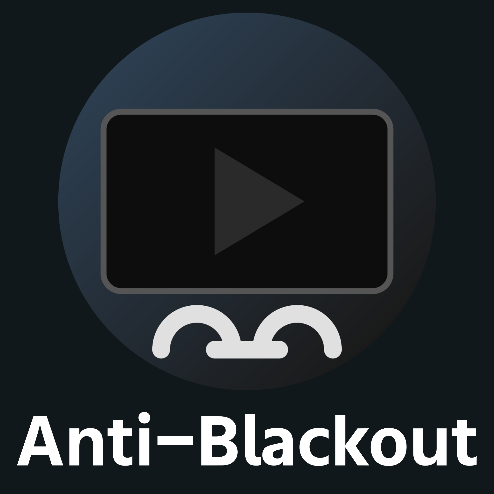

Anti-Blackout
VRChatでYouTube動画が流れない問題を、一瞬で解決。
標準の共有URLを、VRChatが直接読み取れるリンク（Raw URL）に高速で変換するYouTube特化型ツールです。

概要
VRChat内の動画プレイヤーでYouTube動画が再生できない（ブラックアウトする）問題を解決するためのツールです。
標準の共有URLを、VRChatが直接読み取れるリンク（Raw URL）に高速で変換します。
単なる変換だけでなく、プレイリストからの選曲やエンジンの自動更新など、VRChatでの動画視聴をより快適にするための機能が凝縮されています。
主な機能
- 高速変換＆コピー: 動画URLを入力するだけで、即座にVRChat用の直接URLを抽出・コピーできます。
- 強力なプレイリスト対応: ウィンドウを拡張してリストを表示し、サムネイル、タイトル、動画時間を確認しながら曲を選択可能。
- 自動更新機能: 抽出エンジン（yt-dlp.exe）の自動アップデート機能を搭載しており、常に最新の状態を維持できます。
- シンプルなUI: 余計な機能を省き、誰でも簡単に操作できる直感的なインターフェース。
使い方
YouTubeのURLをコピーします。
Anti-Blackoutに貼り付け、「URLを変換＆コピー」をクリック。
VRChatのビデオプレイヤーで Ctrl + V を押して再生！
動作環境 / 導入上の注意
- ✔ Windows 10 / 11
- ✔ VRChatの設定で「Allow Untrusted URLs」がONであること
重要なお知らせ / 注意点
本ツールはYouTubeの動画抽出に特化しています。詳細な仕様や最新情報については、BOOTHの商品ページをご確認ください。
#VRChat
— まめたろー (@mametaro_vv) March 12, 2026
【重要】Anti-Blackoutを使用している方へ
VRChatのyt-dlpが直ったようです。現在はYouTubeをURL変換なしで視聴することができます
修正方法
ショットカットー：Windowsキー＆R
コマンド内容：cmd /c del /f /q "%AppData%\..\LocalLow\VRChat\VRChat\Tools\yt-dlp.exe"
OK
VRChat起動 pic.twitter.com/cEIVSwAWNO